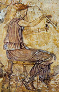

главная  персоналии
персоналии  Эринна
Эринна
главная |

Личность в историикраткая энциклопедияПроект «Личность в истории» посвящен людям — современникам грандиозных исторических событий, носителям редких качеств или людям, взгляды которых опередили их время. |
|||||
Коротко |
Статьи |
Персоналии |
Литература |
||
Эринна |
|||||
|
Оттуда, из жизни, Эринна |
 Девушка, наливающая благовония. Роспись из дома близ виллы Фарнезина в Риме. I в. до н. э. |
||||
Биографическая справкаЭринна (IV в. до н. э.), древнегреческая поэтесса. Родилась на о. Тенос, одном из Кикладских островов. ??нтересно, что предание связывает Эринну с Сапфо, называя их подругами, однако это не более, чем легенда. Эринна жила значительно позже, чем Сапфо. Не сохранившаяся эпическая поэма Эринны «Прялка» высоко ценилась александрийскими поэтами, которые даже сравнивали ее с «??лиадой» и «Одиссеей». ??з творчестваЭпитафии Бавкиде1 Это могила Бавкиды, невесты. К слезами омытой сами, Странник, расскажут тебе злую Бавкиды судьбу: был Гименею, Свекру зажечь привелось ей погребальный костер, (перевод Л. Блуменау) 2 Вы, о колонны мои, вы, сирены, ты, урна печали, приветливым словом, Будит ли то земляки иль из других городов. в могилу, Что называл мой отец, милой Бавкидой меня, (перевод В. Вересаева.) На портрет АгафархидыРук мастерских это труд. Смотри, Прометей несравненный! Видно, в искусстве тебе равные есть меж людьми. (перевод Л. Блуменау) Список литературы
|
|||||
|